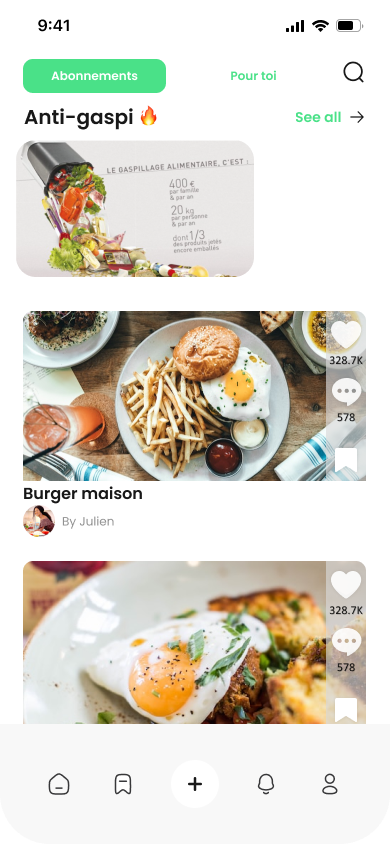
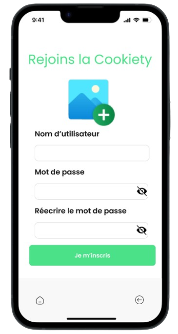

Aucune préoccupations
pour le repas de ce soir !
pour le repas de ce soir !
Cookiety, notre nouvelle application mobile disponible sur iOS et Android !
L'expérience culinaire en proposant des idées de recettes personnalisées grâce à
l'intelligence artificielle.
Simplifiez la planification des repas, découvrez de nouvelles saveurs, et
partagez
vos créations avec la communauté.
Cookiety rend la cuisine ludique, accessible, et adaptée à vos
préférences alimentaires, faisant de chaque repas une expérience délicieusement unique.


🍲 Cookiety - Votre Compagnon Culinaire Intelligent ! 🚀
Découvrez une nouvelle ère de cuisine avec Cookiety, l'application basée sur l'IA
qui personnalise vosrecettes, simplifie la préparation, et vous connecte à une communauté
passionnée.
Rejoignez-nous pour des découvertes culinaires excitantes et une cuisine sans aucun tracas.
Téléchargez maintenant et transformez chaque repas en une expérience inoubliable ! 🌟👩🍳📱